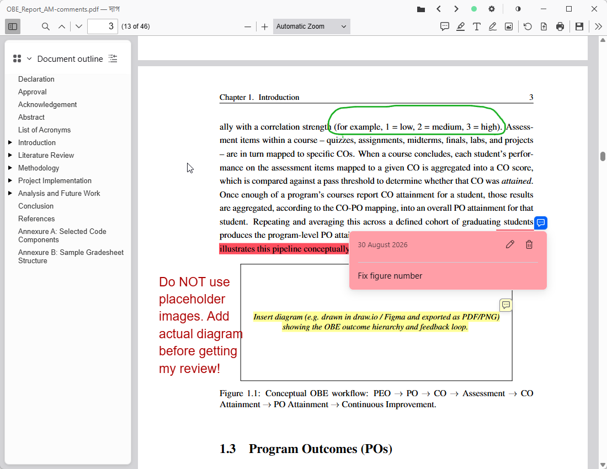
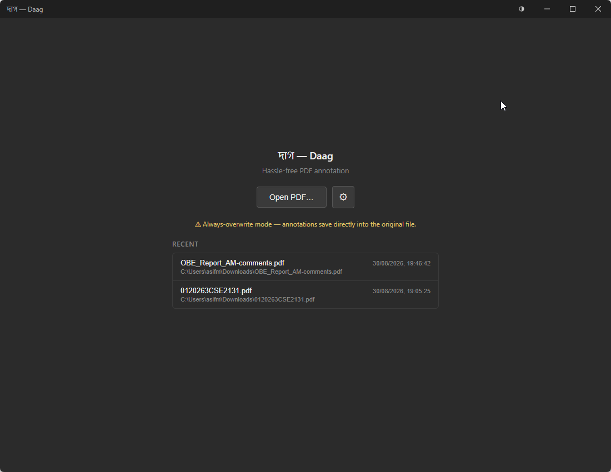
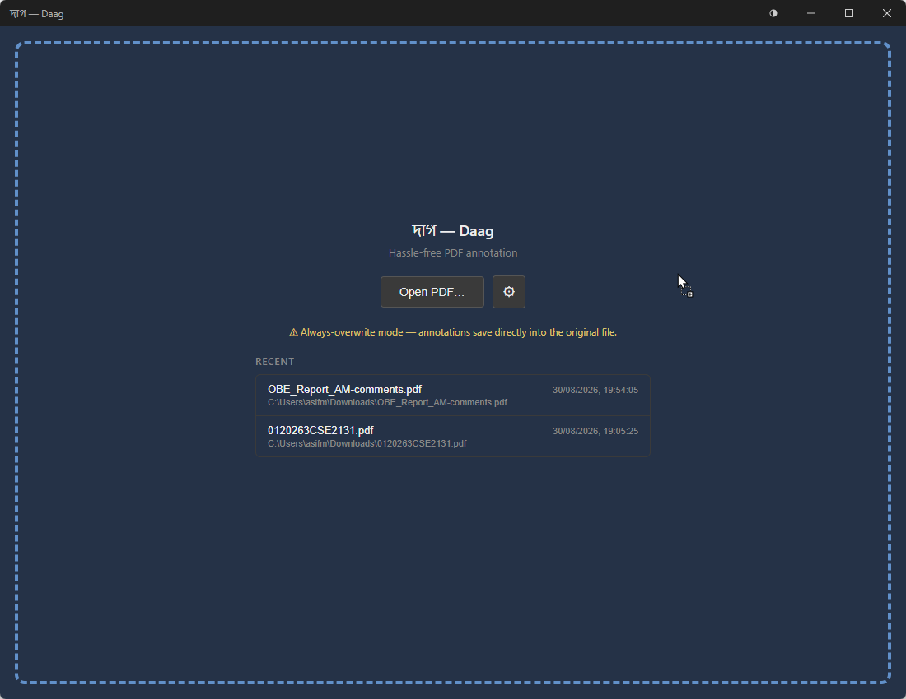
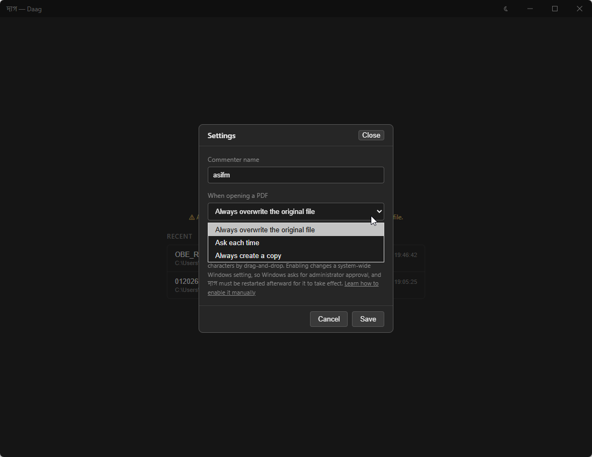
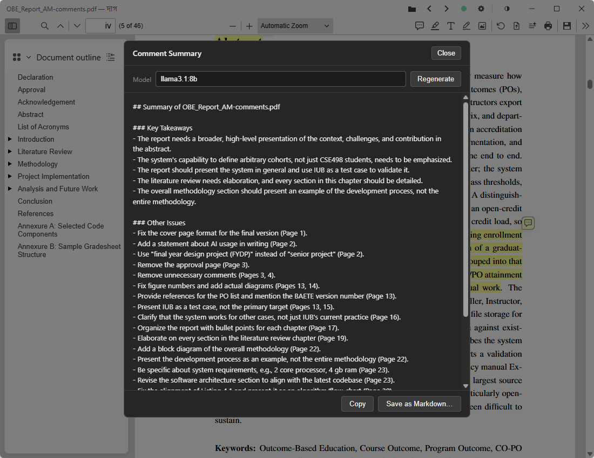

Hassle-free PDF annotation
Annotate a PDF without losing your work
দাগ — daag, “a mark left behind”
Daag is a local-first desktop app that bakes your annotations straight into the PDF file on disk — automatically, every few seconds.
No “save before you close” anxiety. No window where a tab reload, a sleep/wake, or a crash can silently wipe an afternoon of markup.
Windows installer & portable .exe. Linux (AppImage
& .deb) and macOS (.dmg) builds are produced too, but
are experimental.

Why it exists
There’s no good offline PDF annotator that does all three of commenting, highlighting, and free-hand drawing well. Full-fledged PDF editors can, but they’re overkill for marking up a document, priced like the professional tools they are, and it’s easy to nudge the actual page content when all you meant to do was add a note.
Meanwhile, browsers have gotten genuinely good at PDFs for simple annotation. Firefox has the most complete set of tools, but it can’t save — you download the file and rename it over the original every single time. Edge has a clean one-click save, but cannot add comments.
Daag takes the browser-grade editing (it embeds Mozilla’s own pdf.js viewer, the same engine Firefox uses) and gives it a real save: annotated bytes are written back to the original file after every annotation, using write-then-rename so a crash mid-write can’t corrupt it. Nothing to download, nothing to rename.
What you get
The editing tools you already know from the browser, in an app that keeps your work safe on disk without you having to think about it.
Highlight, comment, draw
Highlighting, sticky comments, free-text notes, and free-hand ink — all in one place.
Autosave you can trust
Every edit is saved into the actual PDF within seconds. Close the window, lose power, whatever — the file on disk already has your latest markup.
AI comment summary
Use your preferred AI model (local or online) to summarise your comments with one click.
Quick comments
Re-use your favourite phrases in a single click. Right-click a page or press Q for a list.
Fast and lightweight
A small download (< 20 MB) that launches instantly and stays easy on memory, even with a long PDF open.
Keyboard shortcuts
Built for speed — the tools you reach for most are a single key away. The usual shortcuts you are already used to work as well, like Ctrl+F to search.
Edit in place, or on a copy
Decide per file whether you’re editing the original or a copy. Daag remembers your choice for next time.
Work through a folder
Open one PDF and step through the rest of its folder with Previous / Next — like an image viewer — without leaving the app.
Nothing leaves your machine
Fully offline and local-first — no account, no sync, no network at all. That makes it a safe fit for confidential or sensitive documents.
And also
- Light, dark, or default theme — one button flips the whole app, document view included, with no reload.
- A window per file, not tabs — opening another PDF never disturbs the one you’re already reviewing.
- Undo All — roll the file back to how it was when you opened it in one click, or clear every annotation in it outright.
- Built-in updates — checks GitHub for a newer release on launch and from Settings; downloads and installs only when you say so.
- Bring your own AI endpoint — the comment summary works with any OpenAI-compatible provider (local Ollama or LM Studio, OpenRouter, OpenAI); endpoint, model, and key live in Settings.
- Export comments — pull every comment out into a separate file to share or review outside the PDF.
- Resume where you left off — reopen a file from the recent-files list and the viewer jumps straight back to the page and scroll position you left at.
- Custom titlebar — shows the PDF’s own title, with the full file path on hover.
- Status dot & activity log — a titlebar dot shows saved / saving / unsaved / error; click it for a timestamped history.
- Open it any way — drag a PDF in, press Ctrl+O, or pass it on the command line; every route opens the file safely.
-
“Open with” &
.pdfdouble-click — supported without hijacking your system default viewer. - Long path support — opens deeply nested files past Windows’ old 260-character limit.
- Find in document — full-text search with match highlighting and next/previous.
- Jump anywhere — go to a page number, or browse by thumbnail and document outline.
- Zoom & fit — zoom in and out, fit to page or width, and rotate the view.
- Reading layouts — single page, two-page spread, and full screen.
- Fill in PDF forms — type into form fields and tick checkboxes; the values save into the file like any annotation.
- Insert an image — drop a picture onto the page, or use it to stamp a scanned signature where one’s needed.
- Print — print directly from the app, annotations included. Preview before printing, and choose which pages to print.
Screenshots
Windows build, dark theme.




Download
Grab the latest build from the GitHub Releases page. Builds are unsigned, so Windows SmartScreen and macOS Gatekeeper will warn on first run.
*_x64-setup.exe installer, or
Daag-portable-x64.exe for no-install use.
*_amd64.AppImage or *_amd64.deb —
compiles in CI, not yet verified on a real machine.
*_universal.dmg (Intel + Apple Silicon). Right-click
→ Open on first launch.
System requirements
- Windows 10 or 11, 64-bit — WebView2 ships with both, so there’s nothing extra to install.
- No admin rights to install — it sets up per user; only enabling long-path support later prompts for elevation.
- Linux / macOS — build from source, or try the experimental CI artifacts above.
Building from source instead? See the Setup section in the README.